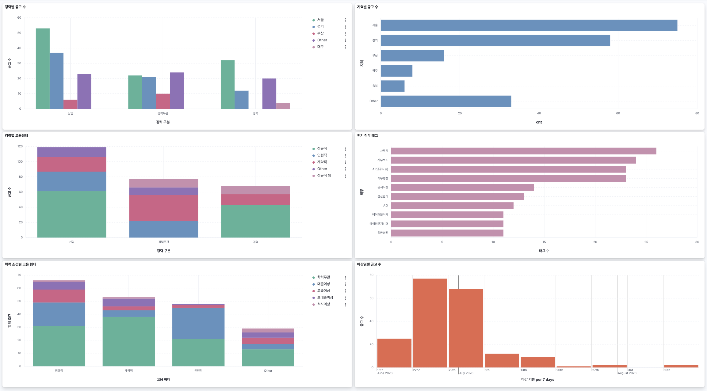
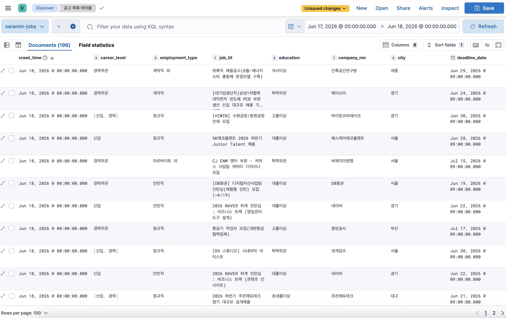
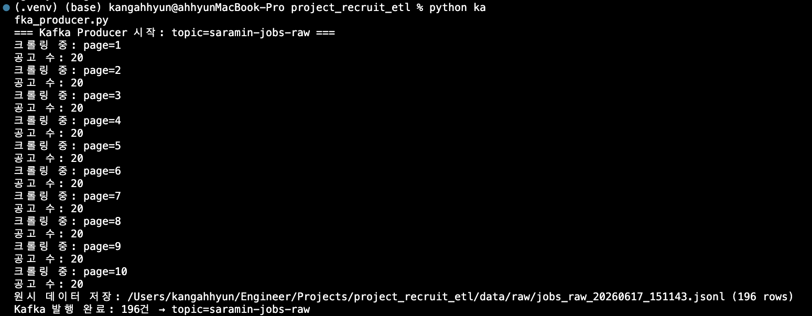
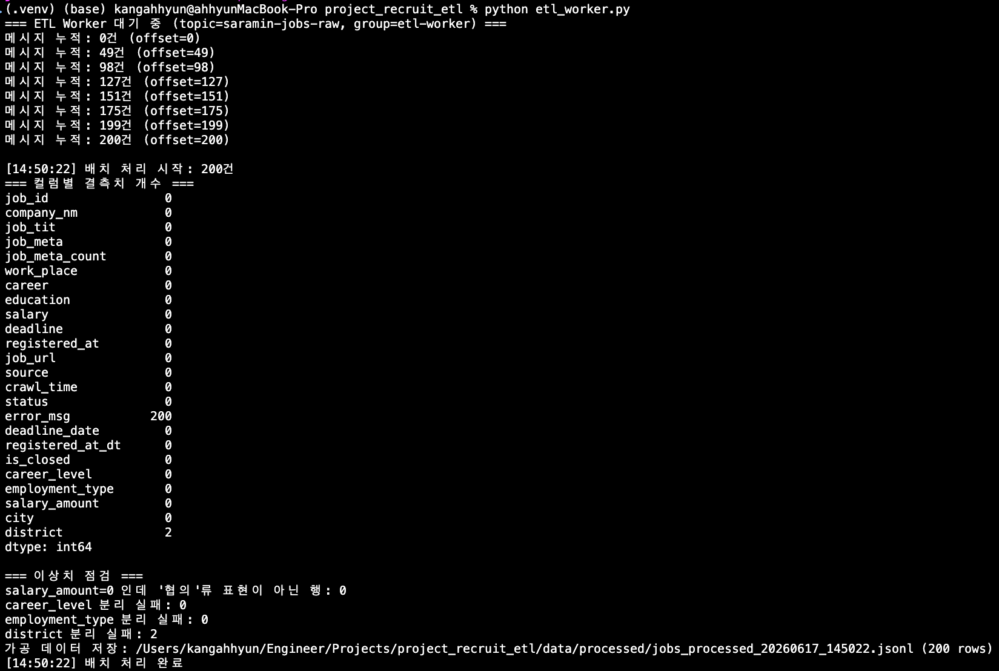

사람인 채용 공고를 자동 수집해 Kafka 메시지 큐로 전달하고, Elasticsearch에 정제·적재한 뒤 Kibana 대시보드로 시각화하는 배치 ETL 파이프라인입니다. 개발 중 발견한 문제를 7번의 커밋으로 단계적으로 개선했습니다.
크롤러와 ETL Worker를 Kafka로 분리해, 수집·처리·저장이 각자 독립적으로 동작하는 구조입니다. 한쪽이 지연되거나 재시작해도 데이터가 유실되지 않습니다.
모든 서비스는 Docker Compose로 실행 (Kafka · Elasticsearch · Kibana)
etl_worker.py는 상시 실행 — 30초 idle 후 자동 배치 flush
ETL 각 단계를 독립 모듈로 분리해 재사용성과 테스트 가능성을 높였습니다.
status: "error"로 오류 추적job_id(rec_idx)로 중복 제거, 원시 데이터를 data/raw/*.jsonl에 보존api_extractor.py를 별도 구현. 두 방식의 출력 스키마를 통일해 이후 Transform 단계가 소스 구분 없이 동작DATA_RETENTION_DAYS 기준 오래된 raw·processed 파일 자동 연동 삭제saramin-jobs-raw 토픽에 publish. acks="all", retries=3으로 전송 신뢰성 확보enable_auto_commit=False로 수동 커밋 — process_batch() 완료 후에만 offset 커밋해 데이터 유실 방지_deserialize()에서 None 반환 후 무시 — JSONDecodeError 방지KeyboardInterrupt + finally로 종료 시 잔여 배치 처리 후 Consumer 정상 종료deadline → deadline_date: D-N, ~MM.DD, 오늘/내일마감 패턴 파싱. 연말 공고 연도 보정 처리registered_at → registered_at_dt: "N분/시간/일 전" 역산career → career_level + employment_type 리스트 분리work_place → city + district 분리, education 표기 표준화log_data_quality()) — 이상치는 WARNING, 정상은 INFO로 레벨 자동 분기job_id를 ES _id로 사용 — 같은 공고 재수집 시 자동 upsert, 중복 색인 없음career_level, employment_type, job_meta를 keyword 배열로 색인 — 요소 단위 terms 집계 가능company_nm: text + keyword 멀티필드 — 전문 검색 + 집계 동시 지원bulk() API로 한 번에 색인, 운영 불필요 컬럼(error_msg, 원본 텍스트) 제외폴링 간격마다 메시지를 누적하고, 마지막 수신 후 30초가 지나면 배치를 한 번에 처리합니다.
batch = []
last_received_at = None
while True:
poll_result = consumer.poll(timeout_ms=POLL_INTERVAL_MS)
if poll_result:
for messages in poll_result.values():
for msg in messages:
if msg.value is None: # 비JSON 메시지 무시
continue
batch.append(msg.value)
last_received_at = datetime.now()
if batch and last_received_at:
idle_sec = (datetime.now() - last_received_at).seconds
if idle_sec >= FLUSH_SECONDS:
process_batch(batch) # transform → save → load
consumer.commit() # 처리 완료 후 offset 커밋 (수동)
batch = []
last_received_at = None| 필드 | 타입 | 설계 이유 |
|---|---|---|
job_id | _id (메타) | 재수집 시 중복 없이 upsert |
job_meta | keyword 배열 | ES가 각 요소를 독립 역색인 → 태그 단위 terms 집계 |
career_level, employment_type | keyword 배열 | 동일 이유 — 복수 경력·고용형태 집계 가능 |
company_nm | text + keyword | 전문 검색(text) + Kibana 집계(keyword) 동시 지원 |
deadline_date, crawl_time | date | 범위 필터, date histogram 활용 |




초기 구현 이후 코드 리뷰를 통해 발견한 문제들을 단계적으로 개선했습니다. 각 개선은 실제 git 커밋으로 기록되어 있습니다.
print()로 로그를 출력했습니다. 레벨 제어(DEBUG/INFO/WARNING)가 불가능하고,
파일 저장도 없어 cron 실행 결과를 추적할 수 없었습니다.
또한 여러 모듈이 logging.basicConfig()를 각자 호출하면 첫 번째 설정만 적용되는 문제가 있습니다.
log_config.py 중앙 설정 모듈을 만들고 각 모듈은 get_logger(__name__)만 호출합니다.
TimedRotatingFileHandler로 자정마다 파일 로테이션, 7일 보관.
콘솔은 INFO 이상, 파일은 DEBUG 이상으로 레벨을 분리해 운영 중 핵심 이벤트와 디버깅 로그를 구분했습니다.
# 변경 전
print(f"[{datetime.now().strftime('%H:%M:%S')}] 배치 처리 시작: {len(records)}건")
# 변경 후 — 포맷·타임스탬프는 포맷터가 자동으로 붙임
logger.info("배치 처리 시작: %d건", len(records))
# 출력: 2026-06-18 17:08:00 [INFO ] etl_worker - 배치 처리 시작: 196건
# 이상치 여부에 따라 로그 레벨 자동 분기
(logger.warning if salary_anomaly_cnt > 0 else logger.info)(
"salary_amount=0 인데 협의류 표현 아닌 행: %d건", salary_anomaly_cnt
)KAFKA_BOOTSTRAP = "localhost:9092", ES_HOST = "http://localhost:9200" 등이
5개 파일에 각자 하드코딩되어 있었습니다. 배포 환경이 바뀔 때마다 코드를 직접 수정해야 하고,
GitHub에 올리면 접속 정보가 노출됩니다. 또한 scrape(pages=range(1,11))처럼
기본값이 모듈 로드 시 고정되는 mutable default 버그도 있었습니다.
config.py 한 곳에서 os.getenv(key, default)로 모든 설정을 관리합니다.
.env는 gitignore 등록, .env.example은 키 목록 템플릿으로 커밋.
.env 없이도 기본값으로 로컬 실행이 가능합니다.
# config.py
KAFKA_BOOTSTRAP: str = os.getenv("KAFKA_BOOTSTRAP", "localhost:9092")
ES_HOST: str = os.getenv("ES_HOST", "http://localhost:9200")
FLUSH_SECONDS: int = int(os.getenv("FLUSH_SECONDS", "30"))
# scraper.py — None 패턴으로 mutable default 버그 제거
def scrape(pages=None): # 변경 전: pages=range(1, 11)
if pages is None:
pages = range(1, SCRAPE_PAGES + 1) # 호출마다 새로 읽음parse_deadline()처럼 "D-N", "~MM.DD", "오늘마감", "내일마감", "상시채용" 등
5가지 패턴을 분기하는 함수에 검증이 없었습니다. 연말 연도 보정 로직 같은 엣지 케이스가
실제로 동작하는지 실행 전까지 알 수 없었습니다.
tests/test_transformer.py에 27개 케이스를 작성했습니다.
기준 시각을 REF = datetime(2025, 6, 15, 10, 0, 0)으로 고정해
날짜 의존성을 제거했습니다. is_deadline_closed의 시(hour) 기반 마감 처리,
None 입력 케이스 등 엣지 케이스를 전부 커버합니다.
REF = datetime(2025, 6, 15, 10, 0, 0) # 기준 시각 고정
def test_parse_deadline_dday():
assert parse_deadline("D-3", REF) == date(2025, 6, 18)
def test_is_deadline_closed_hour_passed():
# "09시 마감", 기준 시각이 10시 → 마감됨
assert is_deadline_closed("09시 마감", date(2025, 6, 15), REF) is True
def test_parse_deadline_unknown_returns_none():
assert parse_deadline("상시채용", REF) is None # 결측 처리 확인docker-compose.yml에 xpack.security.enabled=false가 설정되어 있었지만
이유가 없었습니다. 보안 직무에 지원하는 포트폴리오에서 보안 설정을 이유 없이 비활성화한 코드는
면접에서 치명적인 인상을 줄 수 있습니다.
xpack.security.enabled=true)과
로컬 단일 노드 개발 환경에서 비활성화한 이유를 명시했습니다.
운영 전환 시 필요한 절차(비밀번호 설정, HTTPS 전환, loader.py 인증 추가)도 함께 기록했습니다.
enable_auto_commit=True 상태에서는 poll() 직후 자동으로 offset이 커밋됩니다.
process_batch() 실행 중 Worker 프로세스가 죽으면, offset은 이미 커밋되었지만
transform·load는 완료되지 않아 데이터가 영구 유실됩니다.
enable_auto_commit=False로 변경하고, process_batch() 완료 후
consumer.commit()을 명시적으로 호출합니다.
재시작 시 중복 수신이 발생할 수 있지만, ES의 job_id upsert로
최종 적재는 멱등하게 처리됩니다.
# 변경 전 — poll() 직후 자동 커밋 (데이터 유실 위험)
consumer = KafkaConsumer(..., enable_auto_commit=True)
# 변경 후 — process_batch() 완료 후 수동 커밋
consumer = KafkaConsumer(..., enable_auto_commit=False)
...
process_batch(batch) # transform → save_processed → load
consumer.commit() # 처리 완료 확인 후 커밋
batch = []data/raw/와 data/processed/에
JSONL 파일이 무한 누적됩니다. 정리 로직이 없으면 장기 운영 시 디스크가 가득 찹니다.
save_raw() 호출 시 DATA_RETENTION_DAYS(기본 7일) 초과 파일을 삭제합니다.
raw 파일명에서 YYYYMMDD_HH를 추출해 같은 시간대 processed 파일을 연동 삭제합니다.
삭제 책임을 save_raw()에 단일화해 일관성을 보장합니다.
cutoff = datetime.now() - timedelta(days=DATA_RETENTION_DAYS)
for old_raw in glob.glob(os.path.join(out_dir, "jobs_raw_*.jsonl")):
if datetime.fromtimestamp(os.path.getmtime(old_raw)) < cutoff:
# raw 파일명에서 YYYYMMDD_HH 추출 → 같은 시간대 processed 연동 삭제
date_hour = os.path.basename(old_raw).replace("jobs_raw_", "")[:11]
for old_proc in glob.glob(os.path.join(processed_dir, f"jobs_processed_{date_hour}*.jsonl")):
os.remove(old_proc)
os.remove(old_raw)src/ 구조로 리팩토링 후 모든 모듈이 절대경로 import를 사용하고 있었습니다.
from Projects.project_recruit_etl.src.config import ... 형태로,
특정 상위 디렉토리에서 실행할 때만 동작합니다. git clone 후 프로젝트 루트에서
실행하면 ModuleNotFoundError가 발생합니다.
log_config.py, scraper.py, transformer.py의
BASE_DIR도 src/ 내부를 가리켜 logs/, data/ 경로가 잘못 설정되었습니다.
src/__init__.py를 추가해 패키지로 선언하고, 내부 모듈은 상대 import로 전환했습니다.
루트 레벨 파일(api_extractor.py)은 from src.X import Y 방식을 사용합니다.
BASE_DIR을 한 단계 위로 수정해 logs/, data/가 프로젝트 루트를
가리키도록 했습니다. 27개 테스트로 동작을 검증했습니다.
# 변경 전 — 절대경로 (특정 디렉토리에서만 동작)
from Projects.project_recruit_etl.src.config import KAFKA_BOOTSTRAP
BASE_DIR = os.path.dirname(os.path.abspath(__file__)) # src/ 내부
# 변경 후 — 상대 import (패키지 내 어디서든 동작)
from .config import KAFKA_BOOTSTRAP
BASE_DIR = os.path.dirname(os.path.dirname(os.path.abspath(__file__))) # 프로젝트 루트
# 실행 방법 (프로젝트 루트에서)
# python -m src.etl_worker
# python -m src.kafka_producerenable_auto_commit=True가 기본값이라 당연하게 사용했지만,
처리 완료 전에 offset이 커밋되면 Worker 장애 시 데이터가 영구 유실됩니다.
수동 커밋으로 at-least-once를 보장하고, 재처리 시 중복은 ES의 upsert로 처리하는
패턴이 실무 표준임을 이해했습니다.
job_meta: ["데이터엔지니어", "정보보안"]처럼 리스트로 저장해도
Elasticsearch는 색인 시점에 각 요소를 독립적으로 역색인합니다.
덕분에 Kibana terms 집계에서 리스트 전체가 아닌 태그 단위로 카운팅됩니다.